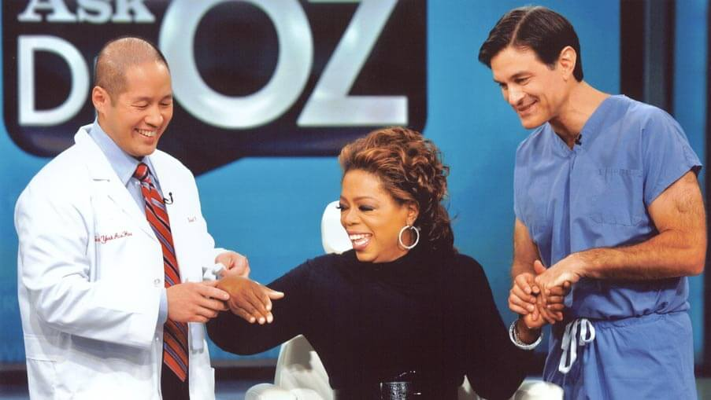
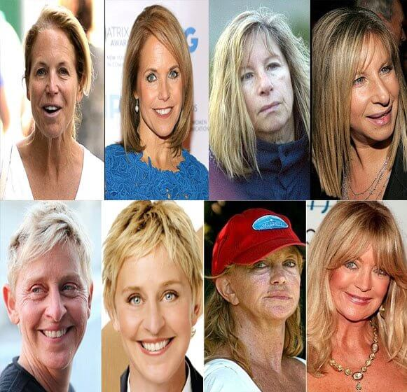
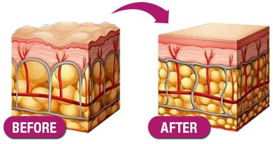
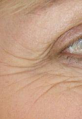
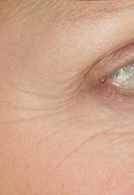
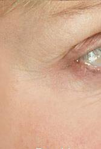
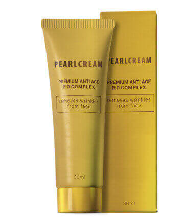

Dr. Oz și echipa lui au dezvăluit cea mai
ieftină metodă care face posibilă eliminarea ridurilor de pe față în cel mai scurt timp!
Hollywoodul e luat cu asalt!

Cosmopolitian -
- Cum reușesc starletele de la Hollywood să arate atât de radiante și
tinere la vârste de 40-50 și chiar 60 de ani? E vorba mereu despre botox scump și operații
estetice periculoase? Potrivit lui Dr. Oz, răspunsul este NU! Deci, dacă nu toate fac operații
pentru a continua să arate minunat, care este secretul lor? Continuă să citești, este încântător
de eficient, sigur și ieftin!
Acum câteva săptămâni, în show-ul său, Dr. Oz a dezvăluit secretul pe care-l oferă
clientelor sale celebre care îmbătrânesc și care vor să arate cu 10-15 ani mai tinere rapid, dar
le e frică de riscurile potențiale ale operațiilor și botoxului. Am fost foarte surprinși să
aflăm ce simplă, ieftină și eficientă este această tehnică, a trebuit să o testăm noi înșine și
să scriem un articol despre rezultate!

Cea mai bună soluție pentru piele de care nu ai auzit vreodată
Dr. Oz a rezervat acest secret referitor la riduri pentru clientele sale celebre care plăteau bani serioși până de curând. A mărturisit că simte că trebuie să lase telespectatorii să afle, pentru că s-a săturat să audă nenumărate povești ale telespectatorilor care aruncă mii de dolari pe produse anti-îmbătrânire scumpe sau proceduri chirurgicale periculoase, care promit multe, dar cel mai adesea fac mai mult rău decât bine. Ca urmare, acum câteva săptămâni, a împărtășit această soluție simplă, pe care anterior o dezvăluise doar clientelor sale celebre, tuturor persoanelor care au urmărit show-ul lui!
De fapt, el a descoperit acest miracol anti-îmbătrânire când numeroase prietene și cliente celebre îl căutau adesea, în speranța unei soluții pentru a arăta mai tinere și pentru a-și prelungi cariera fără a apela la operație.
În show-ul său, a mărturisit că a fost emoționat când, după luni și luni de teste istovitoare și cercetări, echipa lui a dat peste un produs care șterge, fără exagerare, 10-20 de ani de pe fețele femeilor în doar o lună. Mai șocant, este perfect sigur și nu costă aproape nimic ! Produsul pe care l-a menționat în show-ul lui este pearlCream .
Deci, ce este?
2 ingrediente cheie împotriva îmbătrânirii:
1. Colagen - 99,5% pur
2. Acid hialuronic

Acestea sunt ambele ingrediente naturale care acționează împreună pentru a șterge ridurile și liniile fine la nivel celular - sub suprafața pielii - motiv pentru care sunt atât de eficiente.
Colagen - 99,5% pur, Fântâna tinereții:
Prima piesă din puzzle-ul anti-îmbătrânire despre care a vorbit Dr. Oz
este Colagen.
Colagen - 99,5% pur penetrează adânc în pielea deteriorată și stimulează producția de colagen - o proteină care face pielea să pară mai plină și mai fermă. Este foarte în vogă în cercurile de înfrumusețare, în mare parte datorită unui studiu din 2009 care a demonstrat că aplicarea de Colagen pe piele duce la reducerea cu 60% a liniilor fine și a ridurilor . Dr. Oz spune că acesta este motivul pentru care pearlCream este atât de eficient. Este unul dintre puținele produse de pe piață care are Colagen în doza și cu consistența potrivite.
Acidul hialuronic:
El spune că al doilea element, atunci când e combinat în mod corespunzător cu Colagen -
99,5% pur, efectiv îți face fața să arate cu două decenii mai tânără în doar câteva săptămâni!
Acidul hialuronic funcționează prin reținerea umidității. Poate reține până la de 1000 de ori
greutatea sa în apă, ceea ce îl face o excelentă umplutură pentru piele. Acidul hialuronic îți
ajută pielea să se repare și să se regenereze de la sine după ce a suferit din cauza
deshidratării, a factorilor de mediu sau a iritațiilor. El adaugă că unul dintre (dacă nu
singurul) produsele pe care le poți cumpăra de pe piață cu o concentrație eficientă de Acid
hialuronic este pearlCream .
„Ceea ce fac Colagen & Acidul hialuronic este să te scape de straturile vechi și moarte ale pielii și îți ajută pielea să genereze altele noi și proaspete. Testele noastre arată că poți șterge aproape 10-20 de ani de pe față în mai puțin de 14 zile. Dar cheia este să alegi cremele și serurile care conțin cele mai bune și pure ingrediente de calitate, pentru că nu toate sunt la fel. Singurul pe care l-am găsit de-a lungul cercetării noastre a fost pearlCream . Este ceea ce folosește și soția mea. De aceea îl recomand tuturor clientelor mele celebre.” - Dr. Oz
„Cum procedez?”
De fapt, e foarte simplu. Pur și simplu folosești produsul înainte de culcare. Dr. Oz a spus în show că „Produsul conține concentrații mari de Colagen pură și acid hialuronic, exact în cantitatea potrivită. Echipa mea a descoperit, de asemenea, că mai conține tot felul de antioxidanți, un ingredient numit Centella Asiatica si ADN din caviarul de somon.
Am decis să facem un test!
Fiind foarte încântați după show și după ce am primit un potop de scrisori, am dorit să-l încercăm noi înșine înainte să scriem acest articol important prin care lăudăm acest produs. Am decis să luăm un voluntar dintre persoanele care lucrează în biroul nostru. V-o prezint pe Brenda Wright, o mamă de 57 de ani a 3 copii, care a fost foarte fericită să aibă ocazia de a testa acest cremă. Iată povestea ei...
Povestea Brendei & Rezultatele celor 14 zile de regenerare a celulelor:
Brenda are 57 de ani, este mama a 3 copii și locuiește aici, în Chicago. La fel ca majoritatea femeilor de vârsta ei, anii au început să-i aducă linii nedorite și riduri. Brenda spune că s-a oferit voluntară pentru că este foarte frustrată din cauză că toate produsele pe care le-a încercat anterior nu funcționează. Chiar se gândea la o procedură de lifting facial foarte scumpă și riscantă. Aceasta era, oarecum, o ultimă instanță pentru ea.
Iată rezultatele ei...
Ziua Întâi:

După prima zi de utilizare a pearlCream am fost surprinsă cât de bine mi-a făcut pielea să se simtă. Mă simțeam ca și cum fiecare por de pe față era strâns și tras de un aspirator uriaș.
Nu știu cum altfel să descriu! Simțeam o furnicătură caldă pe obraji, în jurul ochilor și pe frunte. M-am uitat în oglindă și am observat că fața îmi era ușor roz – rezultatul sângelui revitalizant care se grăbea spre suprafața pielii, pentru a-mi reînnoi fața.
După ce produsul a fost absorbit în piele, fața mea arăta mai fermă și avea o strălucire frumoasă.
Ziua 5:

După cinci zile de utilizare a pearlCream , am fost șocată de rezultatele drastice.
Liniile, petele închise și ridurile – fără îndoială – scădeau vizibil în dimensiune, chiar sub ochii mei!
Am fost uimită de rezultate și mă simțeam efectiv cu 15 ani mai tânără din nou. Îmi vedeam toate ridurile și liniile fine dispărând pur și simplu!
Ziua 14:
 După 14 zile, nu doar toate îndoielile și scepticismul meu s-au risipit complet – CI ȘI RIDURILE MELE!
Liniile de pe fruntea mea, pielea lăsată și moale de pe gât, laba gâștei – chiar și petele de pe fața mea au dispărut COMPLET. Nu am simțit sau văzut niciodată ceva care să netezească pielea cu atâta forță, indiferent cât de scump era produsul!
După 2 săptămâni, pielea mea nu doar că a rămas astfel, efectiv a devenit mai frumoasă zi după zi, până când a ajuns la fel de frumoasă și radiantă ca acum 20 de ani. În acest punct, toți prietenii mei și întreaga familie erau șocați. Nu puteau să creadă diferența și erau convinși că mințeam despre faptul că nu am folosit botox!
Verdictul:
Utilizarea pearlCream a îndepărtat practic 90% dintre ridurile ei și zonele cu probleme. A întins pielea de pe față și gât, îndepărtând toate semnele de piele lăsată, îmbătrânită și deshidratată.
A trebuit să urmărim progresul ei pentru testul de 14 zile. Iată ce am observat:
Va funcționa și pentru tine?
Există o mulțime de înșelătorii pe piață în ceea ce privește îngrijirea pielii și majoritatea sunt ridicol de scumpe. Cu atât de multe opțiuni, e natural să fii sceptică în privința rezultatelor, deci nu dorim să le promitem nimic cititorilor noștri, pur și simplu te provocăm să faci ceea ce a recomandat Dr. Oz în show-ul său: încearcă chiar tu!
Pentru confortul tău, oferim și link-ul exact pentru produsul recomandat de Dr. Oz. La momentul publicării articolului, producătorul oferă pearlCreami la un preț mai mic cu 50%. Folosind acest link, vei putea comanda produsul la cel mai mic preț posibil.
pearlCream cu 50% reducere:
OFERTĂ LIMITATĂ PENTRU CITITORII NOȘTRI
(Numărul de bucăți este limitat. Solicită acum, înainte să se termine stocul**)
Special: Obține beneficiile comandând pearlCream acum

Comandă cu 50% reducere
Oferta specială se încheie:
Special: Exclusiv pentru Cosmopolitan și cititori: Poți comanda pearlCream cu 50% reducere dând click pe imaginea de mai jos :